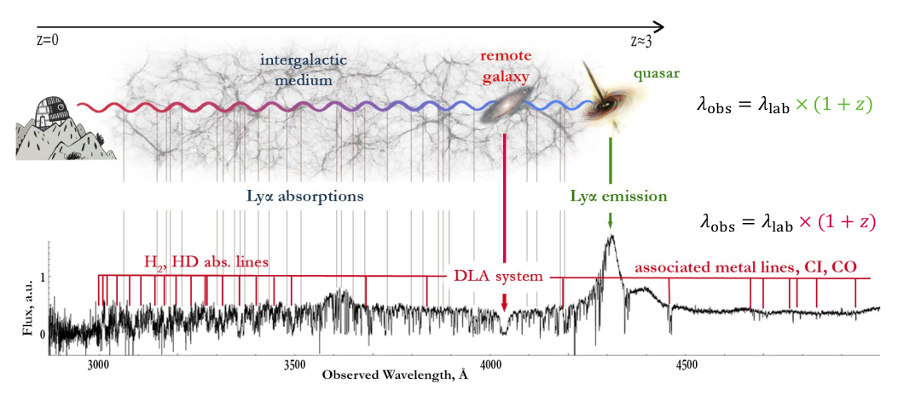

01
Molecular gas in the early Universe
I study molecular gas — H2, HD, and CO — in the interstellar medium of distant galaxies at cosmic noon (z ∼ 2–3). At these redshifts, the molecules’ ultraviolet electronic transitions are shifted into the optical range, allowing them to be observed in quasar spectra with large ground-based telescopes such as Keck and the VLT.
- H2 & HD
- CO
- Cosmic noon, z ∼ 2–3
- Keck & VLT
- SDSS H2 search